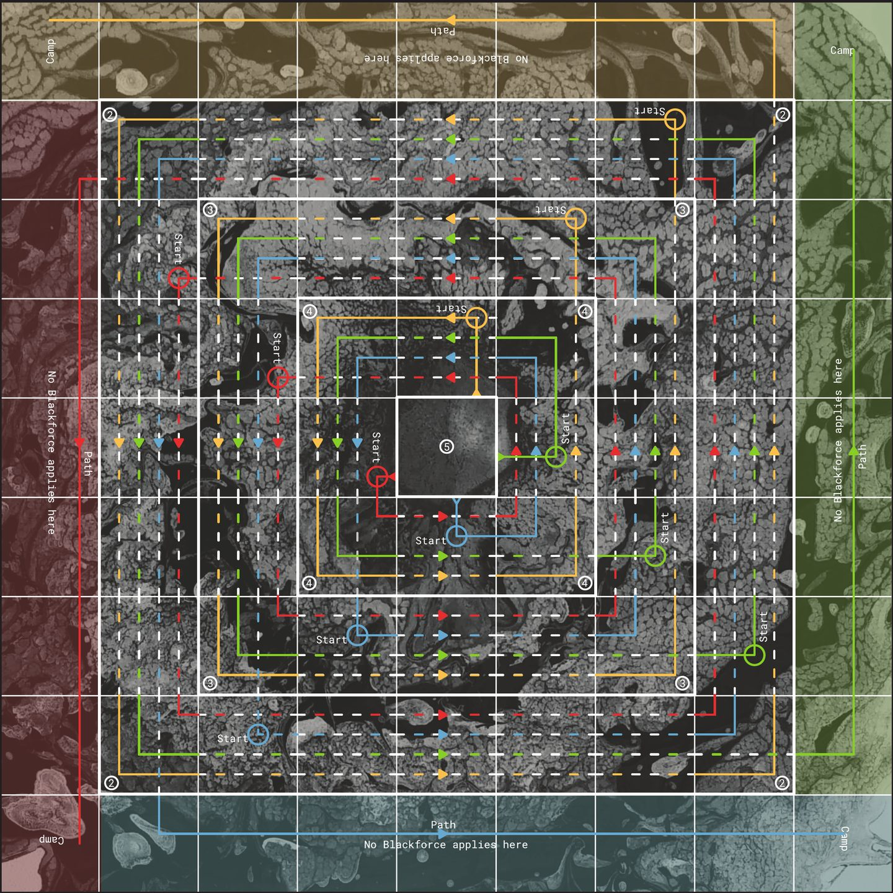
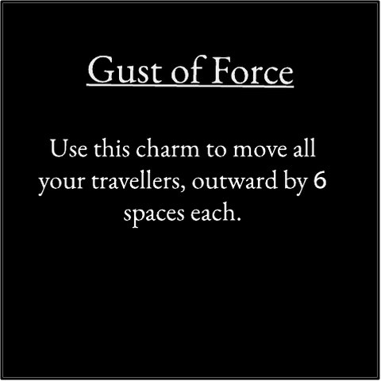
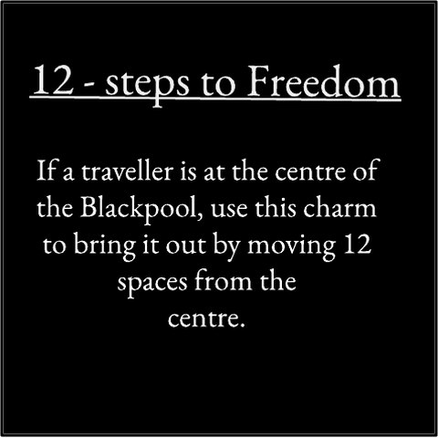
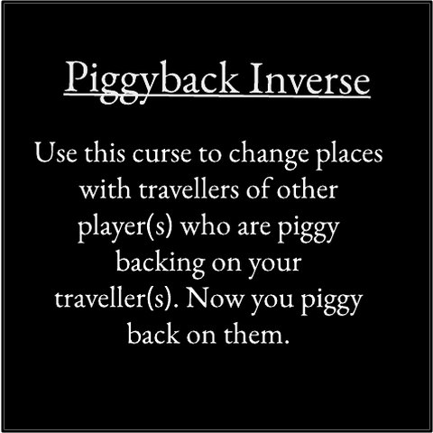
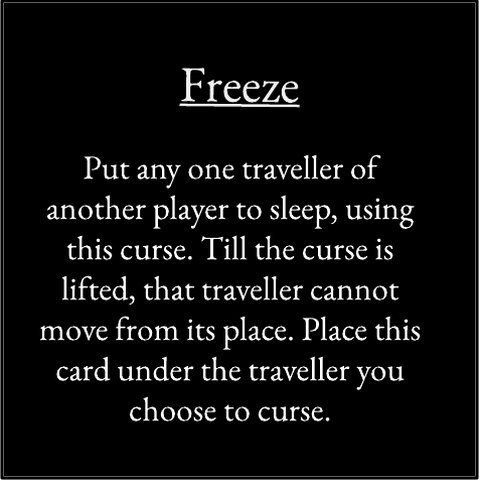
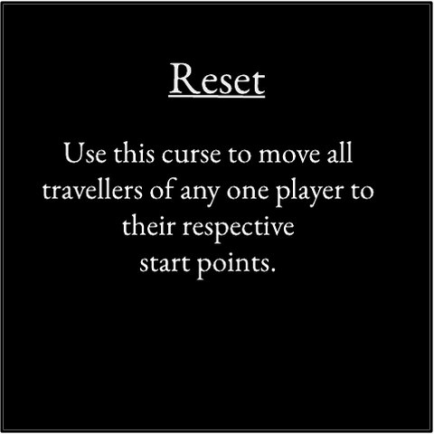
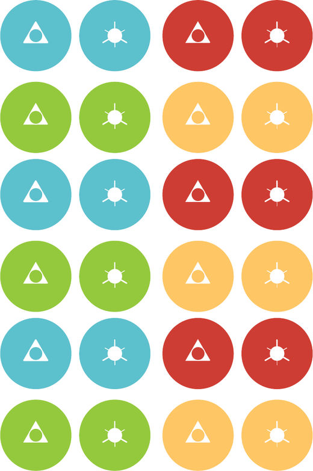

Escape the dark waters
A race for two to four players, out of a whirlpool that pulls you back.
PlayIn your browser, on one screen or each on your own phone, and any colour nobody takes can play itself. No sign-in.

Each player has three travellers caught in a whirlpool. To escape, a traveller has to move faster than the water. The die, which the game calls the Oracle, gives you your Whiteforce for the turn. Each ring pulls back with its own Blackforce, strongest near the centre. Roll higher than a ring's Blackforce and a traveller there goes forward; roll lower and the water drags it back.
Unlike ludo, nobody is knocked off the board. A traveller that lands on another player's rides on it, and the one underneath carries it until it moves off on its own turn. A traveller carrying a rider goes forward less and is pulled back further, so it pays to climb onto whoever is ahead.
I made Blackpool with Priyamvada Gaur in 2019. It came out under Nonserious, the games brand of my company Storyflock Education and Design Services. The board and the cards are painted.
Five charms help you; five curses hurt someone else. Each player has three coins, and a coin can be spent only on a six. Each card can be played only once in a game.






| The board, 360 mm square | 39 MB |
| The back of the board | 13 MB |
| The rules booklet, 36 pages; also as text | 13 MB |
| Charm cards, five, faces and backs | 2.2 MB |
| Curse cards, five, faces and backs | 2.2 MB |
| Travellers, three in each colour | 0.9 MB |
| Coins, three in each colour, a charm face and a curse face | 0.9 MB |
You also need a six-sided die.